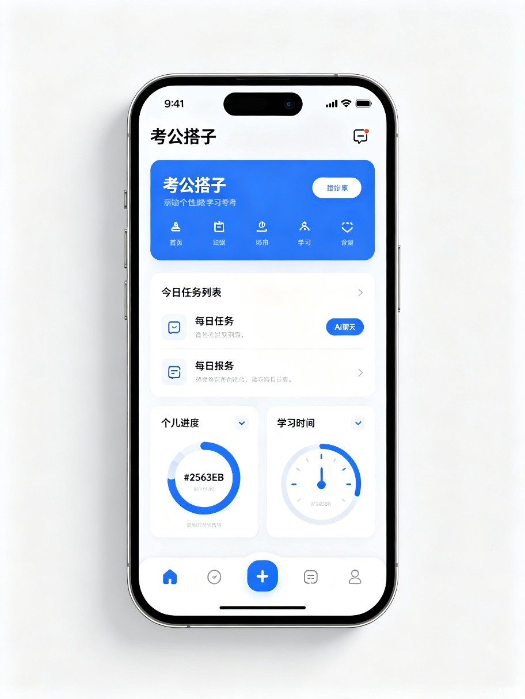

一款由大语言模型驱动的考公全链路智能伴学App，用「精准制导」替代「题海战术」。

数百万考生涌入赛道，传统备考效率低下，陷入严重焦虑。
3小时录播课 + 无差别题海战术，消耗大量时间却无法精准突破。
传统模式「一刀切」，无法根据基础、弱点因材施教。
作为一个深度体验过考公全流程的「局内人」，我经历过刷题无数却收效甚微的瓶颈期。
能否用AI技术，为每一位考生配备一位24小时在线的「私人教研专家」？
LLM 驱动的考公全链路智能伴学App，打破传统线性课程结构。
基于测评数据，AI实时规划最优路线，拆解为每日可执行任务。
依托精洗真题库，复杂考点拆为微模块，10分钟微课精准输入。
从行测公式到申论思路，大模型秒级响应，不厌其烦。
模拟真实考场，AI考官结构化训练，给出针对性改进建议。
时间极度碎片化，需高效利用通勤和晚间时间。
缺乏体系认知，需要从零建立知识框架。
遭遇瓶颈期，清楚薄弱点但不知如何突破。
AI推送当日最弱知识点的3道题 + 1个微课，到站即完成一次有效学习。
跟随AI生成的任务清单，针对性攻克薄弱环节，告别盲目刷题。
输入目标岗位，AI基于历年数据与能力模型，给出报考建议与竞争比。
缺乏数据支撑，对岗位要求和报录比一知半解，「考得好不如报得好」。
找不到明确目标，无法量身定制进度，极易半途而废。
被迫吞咽海量冗余视频，知识无法转化为实战能力。
AI Agent 重塑考公教培成本结构，将数万VIP服务降维普及给大众。
通过算法实时捕捉答题数据，将模糊的「资料分析不行」具象化为「隔年增长率公式运用慢」。